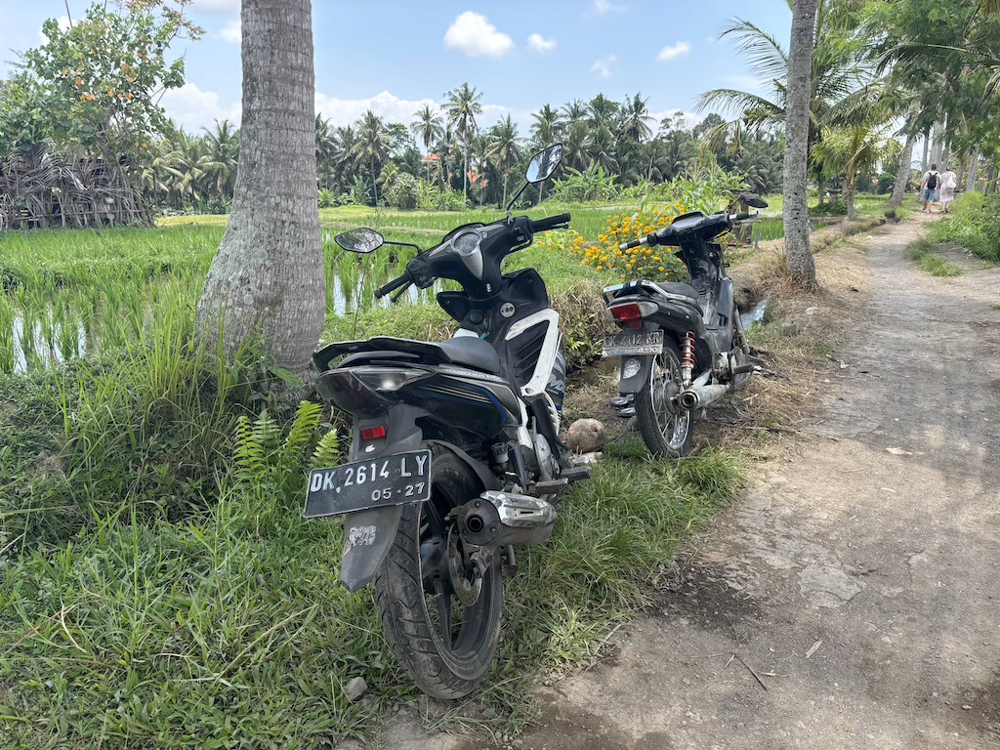

18th to 20th October
After taking a Batik Air flight from Labuan Bajo to Bali and securing a ride to Puji's Hostel, I spent my first evening in Ubud. The hostel was full of others traveling, most of English and German descent. Common discussion was about various activities people had booked to do such as quad biking, walking in rice fields and day trips to pool-side bars. There was also talk of a guy who hadn't been seen all day, bed bound by the so-called "Bali Belly".
The next day was my first real opportunity to see Ubud. I wandered up to the main street that ran through town and witnessed an extremely different kind of road to anything in Japan. Cars and mopeds whizzed up and down the streets constantly, leaving tarmac riddled with potholes and chunks of pavement missing. The bikes were clearly the key means of transport, using all available space, including the pavement, to overtake all traffic.
I stumbled across this temple which I later learnt is named Pura Taman Kemuda Saraswati; the Ubud Water Palace. Seeing other tourists go in and out I decided to enter.

Upon entry I was given a robe to cover my arms and legs and a ribbon to wrap around my head. Inside was a walkway between 2 bodies of water to a large armchair. All along this walkway these statues spouted water creating ripples in the water and a pleasant sound.
After walking to the end of this central way I wandered around the edge and admired more of the stonework. The wall of the temple was heavily detailed in rich Balinese ornamentations. These statues particularly stood out being in full colour and intricately made. They are the Panca Pandawa statues, each depicting a brother from the tale. I especially liked the flower bases they all rested on; Despite being left outside they were bright and perfectly kept. Learn more about these deity depictions on the palace's official website.
After thanking the shrine members and removing the garments I was lent I went for a walk around the northern area of the town. I followed a short signposted route that went through the neighboring rice fields. Despite these tracks being narrow, bumpy and clearly just a trail there were frequent motorbikes traveling up and down it. Nonetheless the area was really pretty.
On the edge of town I snapped a photo of this derelict building. It looks like the locals had converted it into a small arts space with sculptures and graffiti. I suspect the fence looking object in the bottom left is not meant to be there, but I could be wrong. Maybe it's another piece in the collection, "balanced steel poll" by Polih of Ubud, I'm no art expert.

With the rest of the day I decided to walk around the Sacred Monkey Forest Sanctuary. I wasn't sure what to expect other than to see a lot of monkeys, but in my opinion the best part of the sanctuary was the masonry. There were plentiful stone sculptures of Komodo Dragons, Hindu deities and other more imaginative aztec art. The whole place felt like the set for the temple in Raiders of the Lost Ark. Fortunately this temple was not booby-trapped.
On my final day in Ubud I decided to book the sunrise Mount Batur tour. Being a fair distance from the mountain this tour included a 1 hour taxi to and from the start point of the trail. I very almost missed my ride, being woken up just a minute before we headed out and having to eat my breakfast in the car. Although we were advertised an "air conditioned van", the reality was more like an old knackered school bus, and it was completely full. I regret sitting in the back corner as I hit my head on the roof on every pothole, which in Bali is very often.
We were assigned a tour guide at the base of the climb. For about 5 pounds I hired some warm clothing, just in case it was colder than I was predicting. Climbing the mountain took about 2 hours, partly due to half of the group being fairly unfit and partly due to the sheer number of people also walking the trail; looking up the mountain you could see a string of torches leading to the top. The tour guide didn't seem too pleased as we almost missed sunrise. Luckily her concerns were misplaced as we made it with a few minutes to spare. It was stunning.
We got to spend a good hour at the top viewing the scenery. Yes, even here there were monkeys. They were on the hunt for leftover breakfasts or pairs of sunglasses. I snapped this photo of one which turned out particularly well.

Climbing down and taxi-ing back took about 3 hours, returning to the hostel at 9:30. I was shattered so only went out later that evening. For 100,000 Rupiah I saw a traditional balinese dance in the Puri Saren Agung (Ubud Palace). As it was Saturday I caught the Legong Dance, mainly performed by women and accompanied by men playing Gamelan (similar to a metal Xylophone) and flutes.
I missed a few of the most popular sites such as the big swing and bungee jump. Mostly I wanted to see Hindu culture in Ubud, being a more cultural area of Bali. Sadly it does feel entirely tourist oriented; i'd be curious to know how long it has been this way. Nonetheless I enjoyed seeing Ubud and it's rich history. Till next time.
Navigate home